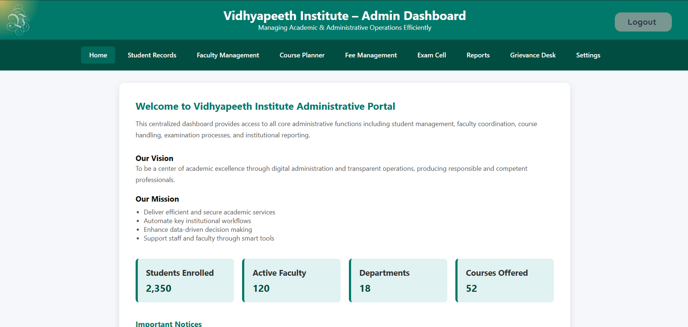

Vidyapeeth Institute Administrative Website
Project Summary:
I developed a comprehensive administrative web platform for Vidyapeeth Institute to streamline institutional workflows, manage student and faculty data, and provide a centralized digital interface for core administrative functions. The website was designed to be responsive, user-friendly, and easily navigable by both staff and students.
Key Features:
- Admin Dashboard for managing faculty, students, and departments
- Login/Registration System with role-based access (Admin, Faculty, Student)
- Notice Board for publishing important updates and circulars
- Course and Training Management for uploading and assigning materials
- Project Tracking for managing academic or research projects
- Email Templates and Contact Forms
- Responsive Design with mobile/tablet support
- Search and Filter Functionality for easy record access
Frontend Technologies:
- HTML5, CSS3, JavaScript for layout, styling, and interactivity
- Bootstrap for responsive UI components
- Animated Elements for modern, dynamic presentation
- Icons and Visuals for playful yet professional user experience
- Typing and Gradient Effects for branding and aesthetics
Backend Technologies:
- PHP / Node.js / Python (Flask/Django) for server-side logic
- MySQL / SQLite for database management
- RESTful APIs for handling CRUD operations and system integration
- Session Management for secure user login and access control
System Highlights:
- Clean and modular code for easy maintenance
- Role-based navigation with customized access and views
- LAN-compatible version for local intranet deployment
- Scalable design ready for future expansion (e.g., exam portal, result system, etc.)
Impact & Outcome:
The Vidyapeeth Institute Administrative Website brought digital transformation to routine academic processes by minimizing paperwork, improving data accessibility, and enabling efficient management of institutional resources. It also provided a seamless communication bridge between administration, faculty, and students.